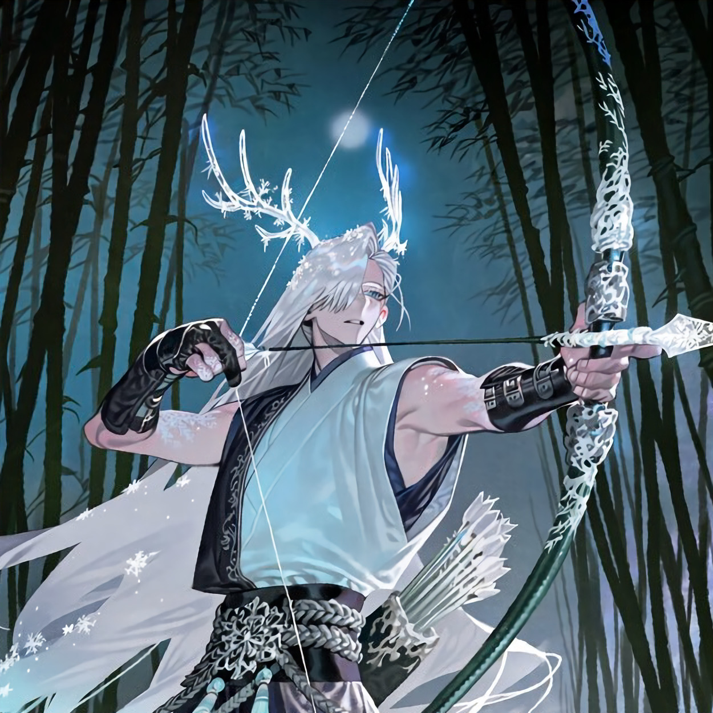

CHARACTER RECORD / 031STATUS: AVAILABLE

✦IMAGE
NOT FOUND
NOT FOUND
白凪
✦ WITH OUTFIT服装込み
PROMPT DATATXT / 031
masterpiece, best quality, ultra detailed, absurdres, boy, solo, adult male, dark fantasy, japanese fantasy,
1.5::tall, slender athletic build, long limbs, narrow waist, elegant posture, pale cool-toned skin, sharp facial features, high cheekbones, narrow icy blue eyes, pale silver eyebrows, long eyelashes, calm aloof expression, slightly parted lips::,
1.5::long silver-white hair, waist-length hair, layered straight hair, uneven bangs partially covering one eye, loose face-framing strands, faint icy blue gradient at hair tips, delicate white frost crystals caught in hair, pointed ears, a pair of elegant translucent crystalline antlers, branching antlers resembling frozen bamboo, subtle blue glow along antler edges::,
1.4::pale blue kimono-inspired inner robe, asymmetrical collar, layered white and deep navy garments, sleeveless outer haori, long flowing sleeves, dark indigo hakama trousers, split overskirt, silver embroidery resembling snowflakes and bamboo leaves, translucent icy fabric panels, intricate braided waist cord, pale blue tassels, black leather archery glove, fitted forearm guards, silver clasps, white tabi socks, dark traditional sandals::,
1.4::frost-patterned markings along fingers and wrists::,
PROMPT NOT ENTERED